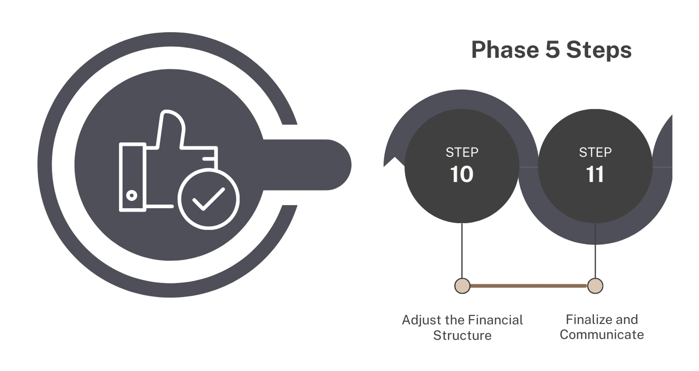

Phase 5: Optimising the pool
{kind=link}

Step 10: Adjust the Financial Structure
It’s likely you may not have all the funding you need to cover everything you would like to, and so your first pool arrangement may have blown your funding pool budget.
This is where you will need to go back and reduce or increase the amount of coverage for different risks to optimise your pool to your funding availability within the risk pool structuring.
Tool guide
Identify the biggest country risk liabilities on the Pool Analysis tab.
Return to Financial Structure Input tab and adjust up or down:
Attachment/Exhaustion points.
Ceding Percentage.
Reinstatements.
Aggregate limit
3.Re-run the structure by pressing Run Model - every time you make adjustments you will need to run the model - and return to the country and pool analysis tabs to consider the new results. Until:
The pool funding requirement is within your budget.
You maximise the coverage while staying within your risk appetite on solvency.
You can balance the coverage needs requested from countries with affordability within your funds capacity.
You are essentially moving different levers in the system until you have things balanced and arranged in a way that fits within your overall funding availability and aggregate limit, maximises the amount you can guarantee for each country-risk and is within your risk appetite for solvency.
These decisions will need to be within the frame of the overall governance of the systems and should be fully transparent and accountable.
Step 11: Finalise and Communicate
- Once you have a workable design, document and clearly explain off-tool decisions:
Data sources, distribution fitting, and limitations.
Why certain ceding percentages or triggers and structures were chosen.
Funding availability, reinsurance decisions, and any residual risk.
Utilise the graphs and tables in a structuring report.
Transparency, fairness, and accountability are crucial. Communicate in accessible, culturally sensitive ways—especially around numerical probabilities and value judgments. Remember what the numbers are actually relating to in crisis and be mindful and respectful in how you communicate that in difficult decisions that often have to be made.